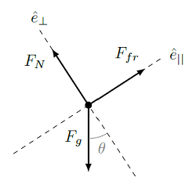
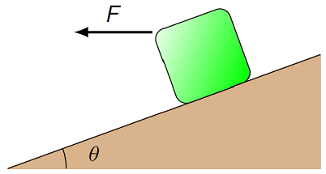

Inclined planes with friction¶
Overview¶
In this lesson, we are going to combine what we have done over the previous two lessons, i.e. add friction to an object on an inclined plane or ramp. Because friction is involved, this means our first step is usually going to be solving for the normal force acting on the object. Then we use this to find the force of friction. Thus, it will be important to completely solve the Newton’s second law equations for the object on the ramp – meaning in both the parallel and perpendicular directions.
Here is the objective for this lesson:
Solve force problems on an inclined plane with friction using a rotated coordinate system.
Inclined planes with friction: an example¶
As stated above, both the parallel and perpendicular compnents of Newton’s second law must be solved to understand the motion of an object on a ramp with friction. We have already seen all the physics concepts we will use, so let’s go through an example, and see how all of the pieces fit together.
Suppose that a child slides down a playground slide with an acceleration magnitude of 1.26 m/s\(^2\). Assuming the slide is at a constant 33.0\(^\circ\) angle to the horizontal, what is the coefficient of kinetic friction between the slide and the child? As always, we first set up the FBD for the situation. The relevant forces here are the gravitational, friction, and normal forces. Since the acceleration is along the ramp, it makes sense to use unit vectors parallel and perpendicular to the ramp. The frictional force opposes the motion down the slide, so it points up the slide. Thus, the FBD looks like the diagram shown below.

We start from the vector sum of the forces,
where
Note that up the ramp is taken as positive here. This means that tha acceleration in this case is
where \(a = 1.26\) m/s\(^2\) is the magnitude of the acceleration. As always, watching your signs means thinking about the directions for each of the vectors involved in the problem! You will see below that if you had not included this sign for the acceleration, you would have gotten the wrong answer for \(\mu_k\). Taking the scalar product with the two unit vectors \({\hat e}_{||}\) and \({\hat e}_\perp\), we get
Before friction was involved, we could solve the \({\hat e}_{||}\) equation without really worrying about the \({\hat e}_\perp\) equation at all. Now that we have friction, we need to solve the \({\hat e}_\perp\) equation first for the magnitude \(F_N\) of the normal force, then substitute that into the \({\hat e}_{||}\) equation. So, going through this plan, we get
and so
Notice why we weren’t told the mass of the child – it cancels out of the equation! Here’s another way to say it. If we double the mass of the child, for example, then the normal force and the child’s weight both double as well. These doublings cancel out in the Newton’s 2nd law equation, giving the same acceleration magnitude. Taking the \({\hat e}_{||}\) equation, and solving for the coefficient of kinetic friction \(\mu_k\) gives
With the numbers given above, this results in \(\mu_k = 0.496\).
Problem: A box sits on a flat board. You lift one end of the board, making an angle with the floor. As you increase the angle, the box will eventually begin to slide down. Why?
The coefficient of static friction decreased
The component of gravity force parallel to board increased
The normal force exerted by board decreased
Both 1 and 2
1, 2, and 3 are all true.
Problem: A mass \(m\) is placed on a rough inclined plane and slides down the plane with constant speed \(v\). If a block of mass \(2m\) were placed on the same incline, it would…
not move at all.
slide a bit, slow down, then stop.
accelerate down the incline.
slide down at constant speed.
slide up at constant speed.
Problem: A horizontal force of 60.0 N is applied to a box of mass 6.40 kg which slides down an incline (\(\theta =20.0^\circ\)), as shown. The coefficient of kinetic friction between the box and incline is 0.240.

What is the magnitude of the normal force (in N) on the box? Answer: 38.5 N
What is the magnitude of the acceleration (n m/s\(^2\)) of the box? Answer: 10.7 m/s\(^2\)
The angle of repose¶
As another example, let’s see how we can experimentally determine the coefficient of static friction \(\mu_s\) for a substance with a simple measurement. Suppose we have a block sitting at rest on a ramp, and it stays at rest, because the force of static friction is enough to keep it in place. This means that static friction has a magnitude less than or equal to its maximum value:
The force equations for this block will be almost the same as in the last section. We don’t set \(F_{fr}\) equal to \(\mu_s F_N\) just yet, however. Thus, we have the force equation in the parallel direction is
since the block is not moving. From the inequality above, this means
We now take the left and right pieces of this inequality, and solve for the coefficient \(\mu_s\), resulting in
Thus, the coefficient of static friction \(\mu_s\) determines a maximum angle \(\theta_s = \tan^{-1} \mu_s\) known as the angle of repose. If the angle of the ramp is greater than this angle \(\theta_s\), then static friction is not enough to keep the block in place, and it will slide down the ramp. On the other hand, if the incline angle is less than \(\theta_s\), then a block started at rest will remain at rest on the ramp.
A consequence of this is that piles of a given material will always have a slope less than a particular value. If you watch the video linked below, you will see sand poured onto an existing sand pile. The angle of the pile with respect to the horizontal will never get to be more than about 35 degrees or so. If this does happen, the sand at the top will slide down, until the angle is again below the angle of repose. So, you can see that the coefficient of static friction for sand on sand is about \(\tan 35^\circ\), or around 0.700.
from IPython.display import YouTubeVideo
YouTubeVideo('SIkRUv39SoI', mute = 1)
Simulating the motion¶
Let’s now use some of our work from Lesson 14, and simulate the motion of a block on a ramp, now with friction. We will use the concept of the angle of repose from the last section to define the frictional force for all possible situations. First, we need to import the same modules as before.
from vpython import box, canvas, color, cos, gcurve, graph, mag, radians, rate, sin, tan, vector
We can also use the same function init() to create the block and ramp. However, we have changed the function slightly, so that the vector block.force is not defined here. This has to do with the fact that the force can change, as discussed further below. Run the cell below to use the function.
def init():
"""
Creates a ramp with a block on it, and returns the
block object. This function only works if the vector
unitPar is already defined in the main code.
"""
# Physical size of ramp
rampLength = 24
rampWidth = 12
rampThick = 0.2
# Objects
ramp = box(pos = vector(0, 0, 0), color = color.green, \
size = vector(rampLength, rampThick, rampWidth), \
axis = unitPar)
block = box(pos = vector(0, 0.6, 0), size = vector(3, 1, 3), \
mass = 2, velocity = vector(0, 0, 0), \
axis = unitPar)
# Return the block object, so it can move
# due to updating in other parts of code
return block
As mentioned above, the definition of block.force was taken out of this function. This is because we have to worry about what kind of frictional force there is! In particular, if the block is not moving, then the friction is static friction, while if it is moving, then it is kinetic friction. This can change throughout the motion, since the block can either start at rest, or stop momentarily during its motion. So, we create a function force() to return the force vector, depending on the value of the block’s speed. Then, in the main code below, this check will be used to give block.force at every time step.
Notice that we don’t check whether the block’s speed is exactly zero! Instead, we check whether it is smaller than a tolerance value TOL. The reason for this is that the speed of the block may never exactly reach zero, because of the numerical error that can built up when using a computer simulation. So we set the variable TOL to a small number, and if the speed is smaller than this, we consider the block to be at rest (at least momentarily).
def force():
"""
Returns the net force vector acting on the block,
depending on the angle, block velocity, and the
coefficients of static and kinetic friction.
"""
# Define partial force on block; this is F_g and F_N,
# and F_fr will be added later
partial_force = block.mass * GRAV_FIELD + block.mass * mag(GRAV_FIELD) * cos(radians(Q)) * unitPerp
# Find force, based on current speed
if mag(block.velocity) <= TOL:
if MU_S < tan(radians(Q)): # Is static friction enough to stop block?
block.force = partial_force + block.mass * MU_S * mag(GRAV_FIELD) * cos(radians(Q)) * unitPar
else:
block.force = vector(0, 0, 0) # Static friction prevents motion
else:
block.force = partial_force + block.mass * MU_K * mag(GRAV_FIELD) * cos(radians(Q)) * unitPar
# Output resulting force
return block.force
Now that we have these two functions, we can turn to the main code, given in the cell below. Much of this is the same as what was used for the frictionless ramp of Lesson 14. However, the coefficients MU_S and MU_K of static and kinetic friction, respectively, are also defined, along with the tolerance limit TOL for finding the net force.
canvas()
# Constants and definitions
Q = 30 # Ramp angle, in degrees
GRAV_FIELD = vector(0, -9.81, 0) # in m/s^2
VEL_INIT_PAR = 5 # Initial parallel velocity component (m/s)
unitPar = vector(cos(radians(Q)), sin(radians(Q)), 0)
unitPerp = vector(-sin(radians(Q)), cos(radians(Q)), 0)
MU_S = 0.3 # Coefficient of static friction
MU_K = 0.1 # Coefficient of kinetic friction
MAX_TIME = 2
t = 0
DT = 0.01
TOL = 0.01 # Tolerance for speed when checking static friction
# Define block with given velocity
block = init()
block.velocity = VEL_INIT_PAR * unitPar
# Evolution loop
while t < MAX_TIME:
rate(100)
# Find force on block using force procedure
block.force = force()
# Update block position, velocity
block.velocity = block.velocity + (block.force / block.mass) * DT
block.pos = block.pos + block.velocity * DT
# Update time
t = t + DT
Problem: The block starts at the center of the ramp, which has a length
rampLength(given ininit()) from one end to the other in the \(x\) direction. Calculate how long it takes the center of the block to reach the edge of the ramp, when the block starts from rest, using the default values of the initial velocity and the friction coefficients. Run the code, and verify that your calculated answer matches what the simulation shows. It may be helpful to change the value of the total timeMAX_TIMEto reflect the time you calculated.
Problem: Change the initial velocity, so that it is moving at 5.00 m/s up the ramp (i.e. in the \({\hat e}_{||}\) direction), and repeat what you did for the last problem. How much of a difference is there in the total time to reach the bottom of the ramp? What if the block is initially moving at 5.00 m/s down the ramp?
Problem: With the given values of the coefficients
MU_SandMU_K, by trial and error, use the code above to find the angle of repose for the block on the ramp. Once you have this angle, verify it by calculating the actual angle of repose for the default value ofMU_S.
In Lesson 14, you found a third unit vector \({\hat e}_{side}\) to help with side to side motion of the block on the ramp. Under the definitions of unitPar and unitPerp, define a third vector unitSide, and experiment with including sideways velocity to the initial velocity. As we saw previously, if the initial velocity is either strictly up or down the ramp (i.e. only in the \({\hat e}_{||}\) direction, the Newton’s second law equations are relatively easy to solve. The mathematics gets much more complicated when side to side motion is included. However, with the vPython simulation we have constructed, it is simple to play around with the various values, and see what happens.
Problem: Add a sideways component to the block’s velocity (no more than 3.00 m/s or so). How does the motion of the block change? Does the block slide down the ramp as far as it did when there was only parallel motion?
Summary¶
We have now brought together the ideas of Lessons 14 (inclined planes) and Lesson 15 (friction). This should give you some practice in applying Newton’s second law to a situation with multiple forces acting on an object. In particular, with an applied force included, this force can have components both parallel and perpendicular to the ramp. If the applied force has a perpendicular part, the normal force can change, thus altering the frictional force parallel to the ramp. Therefore, this is a situation where what is happening in one direction can affect the motion in a perpendicular direction. This will be the generic situation for force problems.
After this lesson, you should be able to:
Solve for the motion of an object on a ramp or incline with friction present.